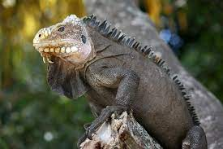
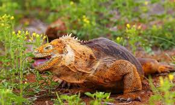
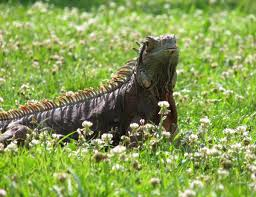

Habitat
As iguanas são encontradas em regiões tropicais e subtropicais da América do Sul, América Central, Caribe e ilhas do Pacífico. Elas vivem em uma variedade de habitats, incluindo florestas, praias, desertos e savanas.

Iguana é um género de réptil da família Iguanidae. As espécies deste género aparecem em regiões tropicais da América Central, América do Sul e Caraíbas. As iguanas têm hábitos arborícolas, isto é, vivem em árvores, podendo atingir até 180 cm de comprimento. Quando jovens, as iguanas possuem uma coloração verde intensa, já quando maiores, apresentam, ao longo do corpo, listras escuras. A cauda de uma iguana possui dois terços do comprimento total do corpo.
As iguanas são encontradas em regiões tropicais e subtropicais da América do Sul, América Central, Caribe e ilhas do Pacífico. Elas vivem em uma variedade de habitats, incluindo florestas, praias, desertos e savanas.
A família Iguanidae possuí mais de 35 espécies. Porém do género Iguana há apenas duas espécies:
| Iguana iguana (Linnaeus, 1758) - Iguana-verde (comum na América latina) | Iguana delicatissima (Laurenti, 1768) - Iguana-do-caribe (comum nas Caraíbas) |

|
 |
Iguanas são totalmente herbívoros, geralmente alimentam-se de folhas, flores e frutos das árvores em que habitam. Em cativeiro deve-se tomar cuidado especial com a alimentação do animal, considerando-se que é impossível replicar a dieta deste na natureza. Uma boa dieta deve ter vegetais verdes, com folhas, o que inclui, beterraba, couve, alfafa, salsa, entre outras, deve-se evitar verduras como alface, que, principalmente em excesso, fazem mal às iguanas.
As iguanas são animais solitários e geralmente não são sociáveis com outros animais, incluindo outras iguanas. Elas são animais diurnos e são mais ativas durante o dia. As iguanas são animais territoriais e podem defender seu território agressivamente.
